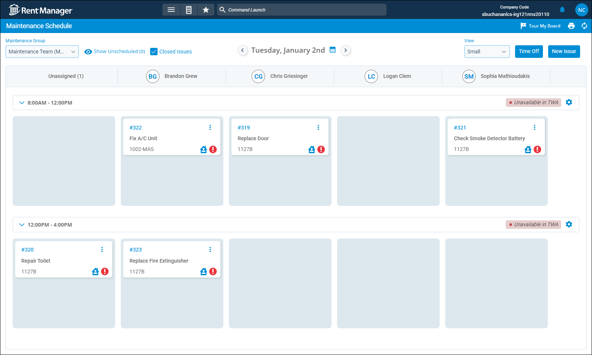

Source: https://rmxhelp.rentmanager.com/Topics/Express/CSH/Maintenance-Schedule.htm
Maintenance Schedule (Page)
The Maintenance Scheduling feature gives you the ability to turn your Rent Manager users into maintenance technicians that can be easily assigned to issues within set time blocks. From the Maintenance Schedule page, you can see the issues that have a maintenance tech assigned and a time block selected to complete the work. Drop-down headers display for each established time block, and each maintenance tech's scheduled issues display in a dedicated column.
If this is your first time setting up the maintenance schedule, you need to set up users as maintenance techs and create maintenance groups.
More Information
This feature is licensed and must be purchased separately. For more information, contact your sales representative at sales@rentmanager.com.
Related Privileges
| Group | Privilege | Column |
|---|---|---|
| Service Manager | View Maintenance Schedule | Enabled |
For more information, refer to Control User Access.
To view and manage the maintenance schedule, go to  arrow_forward Services arrow_forward Service Manager arrow_forward Maintenance Schedule and select a Maintenance Group from the drop-down list.
arrow_forward Services arrow_forward Service Manager arrow_forward Maintenance Schedule and select a Maintenance Group from the drop-down list.

Filter Options
The following filtering options are available on this page.
| Option | Description |
|---|---|
|
Maintenance Group |
Select the maintenance group whose schedule you wish to display from the drop-down list. |
|
Show/Hide Unscheduled |
Include or exclude issues without a Scheduled Date from the maintenance schedule. |
|
Closed Issues |
Check to display completed issues on the schedule. |
|
Date |
Use the arrows to change the date of the schedule, or click to select a date from the calendar. |
Issue Card Row Actions
Each scheduled issue displays with its own card. You can drag and drop these cards to move them to a different time block or assign them to a new user. Additional actions are available from an issue card's  menu. Each action is described below.
menu. Each action is described below.
| Action | Description |
|---|---|
|
Confirm |
Verify the Scheduled Date and time block for the issue and send a confirmation email to the tenant. This option displays only for issues that have not yet been confirmed. |
|
Assign To |
Select a different maintenance tech to complete the issue. |
|
View Unit issue history |
If a unit is linked to the selected issue, the five most recent issues associated with that unit display. To view the full list of issues associated with the unit, click Go to Issue History. |
|
Reschedule |
Select a different date and time for the issue to be addressed. |